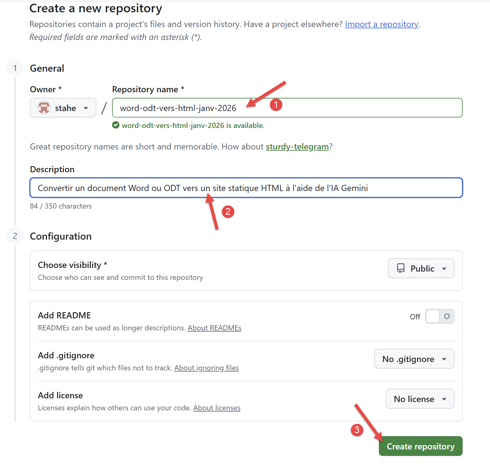
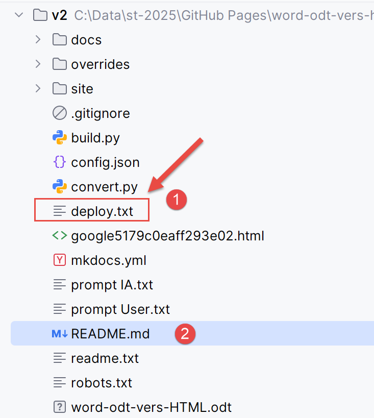
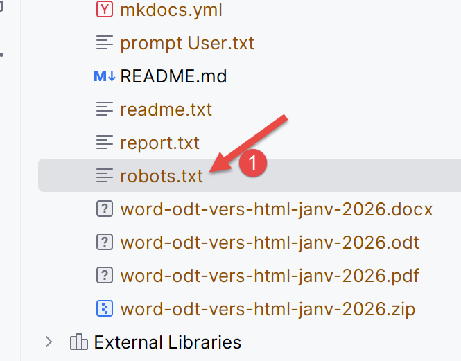
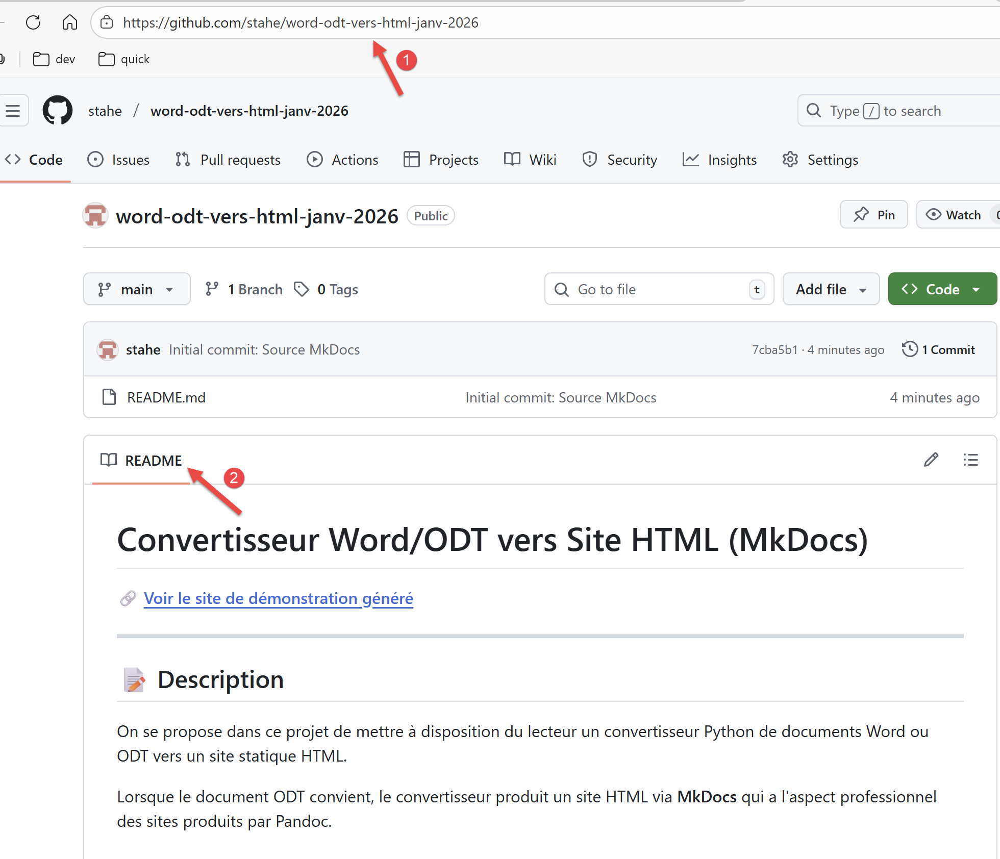
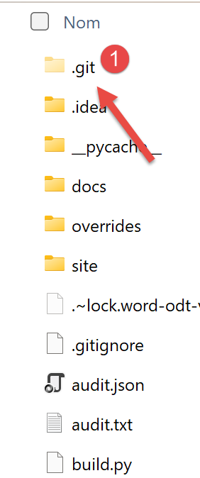
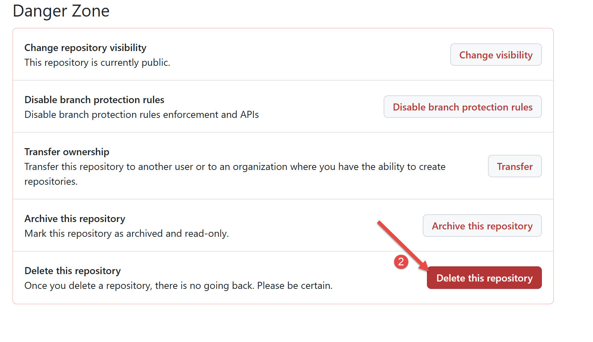

12. Héberger le site HTML sur GitHub
C’est Gemini lui-même qui m’a proposé d’héberger le site HTML produit par ses deux scripts sur GitHub1. Je ne savais pas que c’était possible. GitHub est un site qui héberge des projets de développement. Y exporter des cours de programmation paraît naturel.
Il faut d’abord que vous ayez un compte GitHub. Si besoin est, créez le.
Connectez-vous à votre compte GitHub :
 |
- En [2], vos dépôts (repository) existants si vous en avez ;
- En [3], créez un nouveau dépôt GitHub ;
|  |
- En [1], utilisez le nom que vous avez mis dans [config.py] :
"repo_url": "https://github.com/stahe/word-odt-vers-html-janv-2026",
- En [2], vous pouvez également mettre la même chose que dans [config.py] :
- En [3], validez la création de votre dépôt GitHub ;
 |
Il est conseillé pour chaque dépôt GitHub de créer un fichier [README.md] qui sera affiché à la place de l’écran ci-dessus. Il doit être écrit en MarkDown, un truc pas simple. On va donc écrire un fichier texte avec dedans ce qu’on voudrait voir dans le README. Puis on demandera à l’IA de nous donner le README.md qui correspond.
Le fichier texte [readme.txt] sera le suivant :
Le prompt à Gemini est alors le suivant :
 |
- En [1], le fichier attaché [readme.txt] ;
- En [2], le prompt ;
Copiez la réponse que Gemini vous donne dans le fichier [README.md] de votre dossier de travail. Voici la réponse que Gemini m’a donnée :
C’est un README très complet qu’il m’a fourni. C’est parce que Gemini connaît très bien ce projet sur lequel on travaille depuis des semaines. Vous aurez sans doute un [README.md] moins détaillé.
Maintenant revenons à notre dossier de travail :
|  |
- En [2], le fichier README que vous venez de modifier ;
- En [1], le fichier [deploy.txt] explique comment exporter votre site HTML sur votre dépôt GitHub ;
Le contenu du fichier [deploy.txt] est le suivant :
C’est la suite de commandes qui va exporter votre site HTML sur votre dépôt GitHub. Vous aurez à modifier la ligne 7 avec l’URL de votre propre dépôt GitHub, présente dans le fichier [config.py] :
Vous devez vérifier également une autre URL présente dans le fichier [robots.txt] :
|  |
Le contenu du fichier [robots.txt] est le suivant :
User-agent: *
Allow: /
Sitemap: https://stahe.github.io/word-odt-vers-html-janv-2026/sitemap.xml
En ligne 3, mettez l’URL de votre site, la même que dans le fichier [config.py] :
# URL de publication du site (ex: GitHub Pages)
"site_url": "https://stahe.github.io/word-odt-vers-html-janv-2026/",
Le fichier [robots.txt] n’est pas utilisé lors de la construction locale du site, mais il le sera lorsqu’il sera hébergé sur GitHub.
La suite de commandes de [deploy.txt] utilise un logiciel appelé Git. Vous devez l’installer [Git - Install for Windows].
Ceci fait, vérifiez le fichier s’appelant [.gitignore] dans votre dossier de travail. Il indique à Git les fichiers qu’il doit ignorer. Mon fichier [.gitignore] est le suivant :
Il est extrêmement simple. On ignore tous les fichiers (ligne 2) sauf le fichier [README.md] (ligne 5). GitHub est fait pour héberger les projets de développement. C’est en général tout le projet de développement qui est exporté sur GitHub. Nous on cherche simplement à exporter un site HTML, pas un projet de développement. Le seul fichier qu’on veut exporter sur notre dépôt GitHub est le fichier [README.md] qui explique aux visiteurs ce que contient notre site HTML.
Maintenant, dans votre terminal, tapez la séquence de commandes suivantes dans l’ordre indiqué par [deploy.txt] en allant jusqu’à la commande 8. N’exécutez pas la commande 9 pour l’instant.
PS C:\Data\st-2025\GitHub Pages\word-odt-vers-html\v2> git init
Initialized empty Git repository in C:/Data/st-2025/GitHub Pages/word-odt-vers-html/v2/.git/
PS C:\Data\st-2025\GitHub Pages\word-odt-vers-html\v2> git branch -M main
PS C:\Data\st-2025\GitHub Pages\word-odt-vers-html\v2> git add .
PS C:\Data\st-2025\GitHub Pages\word-odt-vers-html\v2> git commit -m "Initial commit: Source MkDocs"
[main (root-commit) 7cba5b1] Initial commit: Source MkDocs
1 file changed, 89 insertions(+)
create mode 100644 README.md
PS C:\Data\st-2025\GitHub Pages\word-odt-vers-html\v2> git remote add origin https://github.com/stahe/word-odt-vers-html-janv-2026.git
PS C:\Data\st-2025\GitHub Pages\word-odt-vers-html\v2> git push -u origin main
Enumerating objects: 3, done.
Counting objects: 100% (3/3), done.
Delta compression using up to 8 threads
Compressing objects: 100% (2/2), done.
Writing objects: 100% (3/3), 1.70 KiB | 1.70 MiB/s, done.
Total 3 (delta 0), reused 0 (delta 0), pack-reused 0 (from 0)
To https://github.com/stahe/word-odt-vers-html-janv-2026.git
* [new branch] main -> main
branch 'main' set up to track 'origin/main'.
Faites un Ctrl-clic sur l’URL de la ligne 17. Cela va vous emmener sur votre dépôt GitHub :
|  |
- En [1], l’URL de votre dépôt GitHub ;
- En [2], le nouveau README.md ;
Maintenant passons à la commande 9 du fichier [deploy.txt]. C’est elle qui exporte le site HTML sur GitHub :
PS C:\Data\st-2025\GitHub Pages\word-odt-vers-html\v2> python -m mkdocs gh-deploy
INFO - Cleaning site directory
INFO - Building documentation to directory: C:\Data\st-2025\GitHub Pages\word-odt-vers-html\v2\site
INFO - Doc file 'les-exemples.md' contains a link '#_Les_exemples', but there is no such anchor on this page.
INFO - Documentation built in 1.79 seconds
WARNING - Version check skipped: No version specified in previous deployment.
INFO - Copying 'C:\Data\st-2025\GitHub Pages\word-odt-vers-html\v2\site' to 'gh-pages' branch and pushing to GitHub.
Enumerating objects: 91, done.
Counting objects: 100% (91/91), done.
Delta compression using up to 8 threads
Compressing objects: 100% (85/85), done.
Writing objects: 100% (91/91), 1.64 MiB | 2.01 MiB/s, done.
Total 91 (delta 9), reused 0 (delta 0), pack-reused 0 (from 0)
remote: Resolving deltas: 100% (9/9), done.
remote:
remote: Create a pull request for 'gh-pages' on GitHub by visiting:
remote: https://github.com/stahe/word-odt-vers-html-janv-2026/pull/new/gh-pages
remote:
To https://github.com/stahe/word-odt-vers-html-janv-2026.git
* [new branch] gh-pages -> gh-pages
INFO - Your documentation should shortly be available at: https://stahe.github.io/word-odt-vers-html-janv-2026/
Faites un Ctrl-clic sur l’URL de la ligne 21. Cela va vous amener à votre nouveau site HTML sur GitHub :
 |
- En [1], on voit que vous affichez un site web sur GitHub ;
Il est extrêmement facile de se tromper dans l’exécution des commandes de [deploy.txt]. Il est alors difficile de revenir en arrière car Git garde la mémoire de ce qu’on a fait (mal). Pour repartir de zéro, visualisez le dossier de travail :
|  |
- En [1], supprimez le dossier [.git] ;
Revenez ensuite dans PyCharm et recommencez la série de commandes de [deploy.txt].
Que faire si vous modifiez votre Document ODT / DOCX ? Faites les 3 choses suivantes :
- convertissez de nouveau votre Document ODT / DOCX avec [convert] ;
- construisez le site HTML avec [build] ;
- exportez le site HTML sur GitHub avec la commande [python -m mkdocs gh-deploy]. Cette commande suffit tant que vous ne modifiez pas le fichier [README.md]. Si vous modifiez le fichier [README.md], vous aurez un peu plus de commandes à émettre :
Si vous avez seulement modifié le README, seules les commandes 1, 3, 4 sont nécessaires. La commande 5 est inutile si vous avez déjà déployé le site HTML et qu’il n’a pas bougé depuis.
Que faire si vous voulez repartir de zéro parce que les choses sont parties en vrille ? Vous pouvez supprimer votre dépôt GitHub et refaire toutes les opérations du chapitre 12. L’option de suppression d’un dépôt GitHub est bien cachée :
 |
- En [1], allez dans les paramètres de configuration du dépôt ;
|  |
Allez tout en bas de la page des [settings]. Vous y trouverez le bouton pour supprimer votre dépôt [2].
-
Note de bas de page pour GitHub ↩